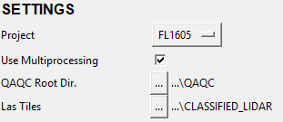
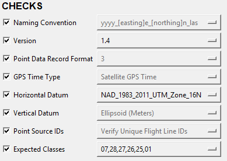
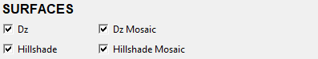

Settings¶
The user is required to specify the following settings:
Setting |
Description |
|---|---|
Project |
lists the folders contained in //ngs-s-rsd/Lidar_Contract00 |
Use Multiprocessing |
specifies whether to not Q-Checker uses multiple cores to perform checks and create surfaces (Q-Checker crudely uses half of a system’s number of cores.) |
QAQC Root Dir. |
the directory to contain the QAQC directory structure |
Las Tiles |
the directory containing the las files to be processed |
Note
Q-Checker relies on a number of other settings, which are dynamically and statically specified in a separate configuration file (./assets/config_files/qaqc_config.json), but the user will generally not need to interact with these on an operational basis.
Checks¶
The user can run a series of checks to verify that certain expected information is contained in the submitted LAS files.
Check |
Description |
|---|---|
Naming Convention |
checks that las files are named according to the yyyy_[easting]e_[northing]n_las naming convention |
Version |
checks that the las files are the version specified in the corresponding drop down menu |
Point Data Record Format |
checks the Las files contain the proper PDRF corresponding to the specified version |
GPS Time Type |
checks that ‘GPS Time Type’ in the Las header is ‘Satellite Adjusted Time’ (not GPS week seconds) |
Horizontal Datum |
checks that Las header contains the specified horizontal spatial reference |
Vertical Datum |
checks that Las header contains the specified vertical spatial reference |
Point Source IDs |
checks that Las file contains > 1 unique point source id (flight line number) |
Expected Classes |
checks that Las file contains classes other than the specified expected classes |
Surfaces¶
The user has the option to generate the following surfaces:
Surface |
Description |
|---|---|
Dz |
shows the maximum difference in the z values (i.e. dz values) of points from overlapping las files |
Hillshade |
an 8-bit gridded representation of the lidar point cloud based on an illumination azimuth/altitude of 315°/45° |
Dz Mosaic |
all of the individual tile Dz surfaces combined into a single surface |
Hillshade Mosaic |
all of the individual tile hillshade surfaces combined into a single surface |